Steamer Trunk, 1890 - 1915
Purchase Info
This trunk was bought by me, Kalyn Morris, in August 2025 for $20.00. It was bought at Antiques at Hall Lumber Co in Chester, SC (106 Hudson St, Chester, SC 29706). Based on its construction, it can be dated approximately between 1890 and 1915, with stylistic and material clues pointing most strongly to the years 1900–1915.Skip to Before and After!
Initial Assessments & Dating
- There was some kind of white staining around the brass-coated decorative nails. It reminded me of evaporated salt, but I don’t know.
- The inner paper lining was torn, flaking, and stained by time.
- I suspect the trunk was locked and someone lost the key. The trunk was forced open, tearing the lock off of the top lid. It did not have a key included when I bought it.
- The top insert was shoved in at an angle and was kept that way for a long time, forming memory and warping it so it would not lay flat.
- The top insert was shoved in at an angle and was kept that way for a long time, forming memory and warping it so it would not lay flat.
- The wooden insert support piece on the right side was forced out of place on the right side, tearing the nail right through the wood. Luckily the missing chunk of wood was present inside the trunk.
- If not for tearing this support structure, the insert would not have been able to be laid diagonally inside the trunk. For some reason, a previous owner wanted it in like that.
- If not for tearing this support structure, the insert would not have been able to be laid diagonally inside the trunk. For some reason, a previous owner wanted it in like that.
- Rust to all the brass-coated hardware- more extensive on the decorative nails.
- A big tear in the middle panel of the lid, affecting a small part of the right panel. Thirsty leather liable to cracking.
- A big tear in the middle panel of the lid, affecting a small part of the right panel. Thirsty leather liable to cracking.
- Uneven coloration to the leather in general, most extensively on the lid.
- The leather handles were brittle and damaged. On the right-side handle, it had split about half-way.
A safe and supported all-around estimate: 1890 - 1920
Before Pictures
.jpg)
.jpg)
.jpg)
.jpg)
.jpg)
.jpg)
.jpg)
.jpg)
.jpg)
.jpg)
.jpg)
.jpg)
.jpg)
Restoration Process
Overview
- I wiped down the trunk to clean excessive dirt and dust, with a vinegar and water solution and paper towels.
- I used “Fiebing’s All Purpose Cleaner & Conditioner (cleans, conditions, and protects)”, spreading it and rubbing it in with a microfiber cloth. I repeated this once a day for 3 days.
- I gave a light sanding to the metal pieces, only enough to get off orange dust and rust pieces. I used steel wool, hard to soft, in my finger (being careful not to scrape the surrounding leather). I used a fine metal dental tool to carefully scrape away rust from the bottom edges of the screws, where they meet the trunk.
- I used museum grade acid-free archival glue (“LINECO Neutral pH Acid Free Adhesive”) to glue down and seal the cracks. I also used it to glue and repair the conditioned leather handle on the right that had split (using small clamps).
- I used “Angelus Black Lustre Cream”, 3 layers of it, drying in between. I used a microfiber cloth to buff. If that sounds slightly excessive, I make the decision to take special care due to white mineral-looking staining and other unevenness to the finish.
- I used “Pecard Waterproofer and All-Purpose Leather Conditioner” leather dressing (“cleans, conditions, and preserves”), 2-3 coats the next couple of days, and more when it dried up, to keep the leather nourished. I used a microfiber cloth.
- I used Von Schneider Micro-Crystalline Wax Polish (AKA Renaissance wax) to enhance and protect (from rust) the metal hardware.
- I used the same acid-free archival glue to glue the interior paper back down. I used the same glue to glue down the chip of wood that was torn off of the right side of the insert.
- The inside was cleaned lightly with vinegar-water and then dried immediately, partly in an effort to get rid of dark stains. I think it helped a little.
- The insert was warped and needed to be reformed back into being straight. I sprayed the bottom with water and put it on a towel. Then I sprayed the top and put a towel on top. Then I put heavy books on top of that towel. I did this for many days, spraying more water and seeing no adverse effects to the paper. Twice, I did the same thing but used an iron over the towel. It was still wanting to snap back, so I stored it between towels under the trunk for weeks to try to get the memory to stick.
- We had to use a couple of new nails and wood glue to secure the insert.
- I bought a set of antique trunk keys on ebay. One worked! The lock was unlocked.
- We hammered the upper attached lock piece (warped and torn off) back into shape the best we could. Then we screwed brass screws in to re-attach it.
- I put in a protected cloth liner made from tablecloth I got at a thrift store.
After Pictures
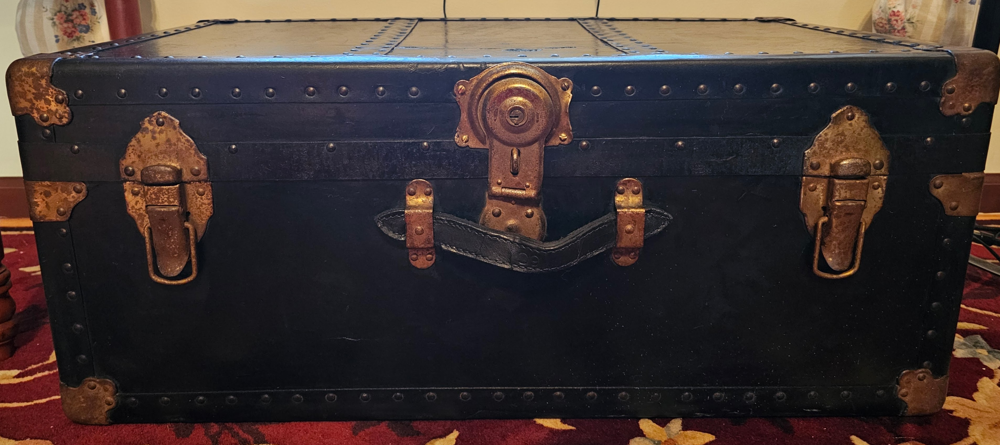 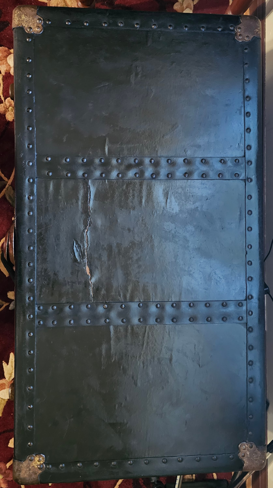
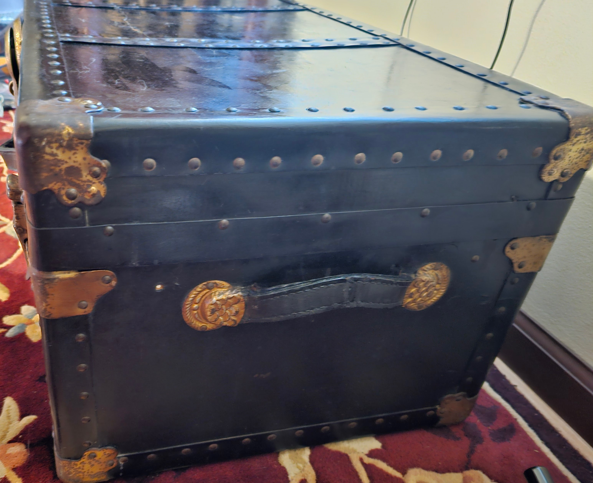
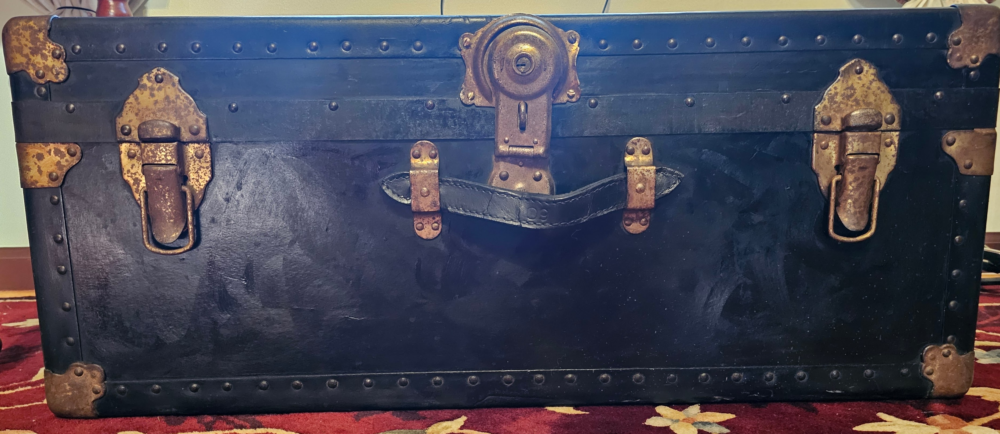
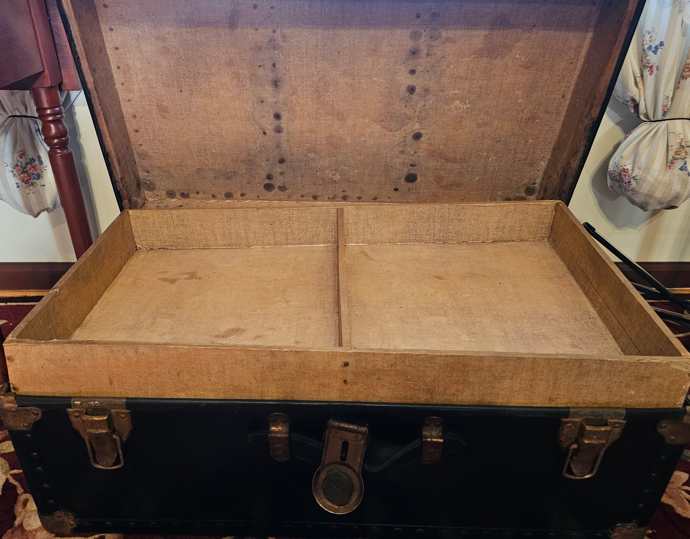
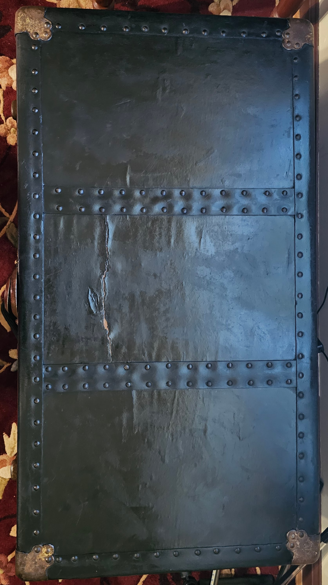
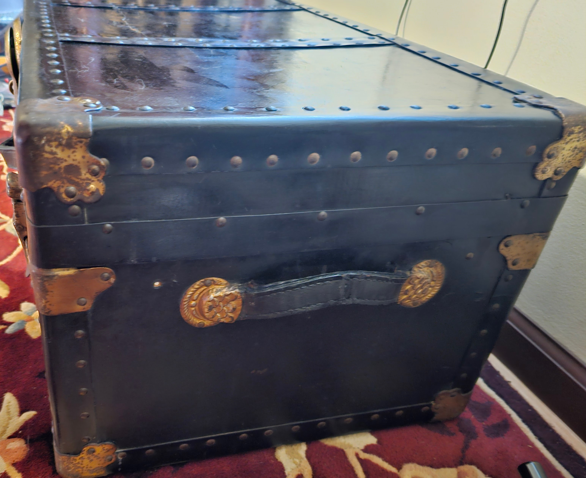
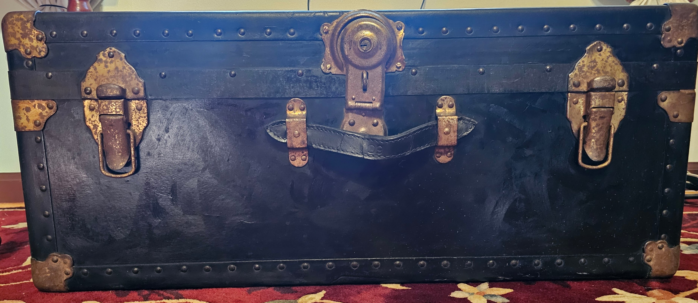
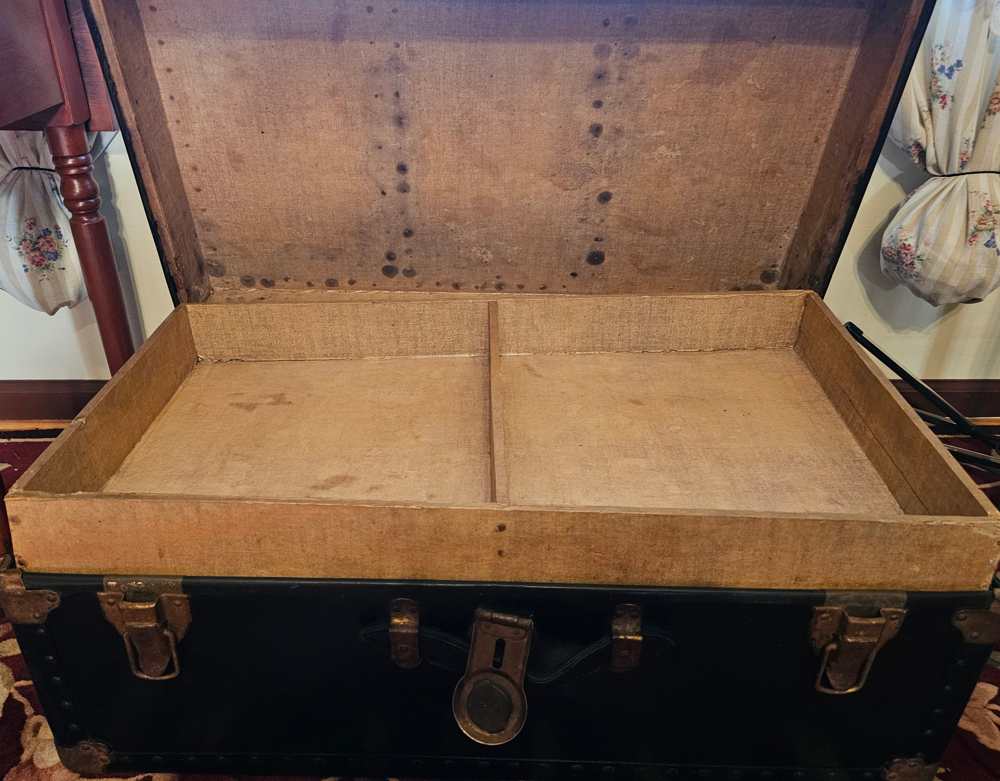
 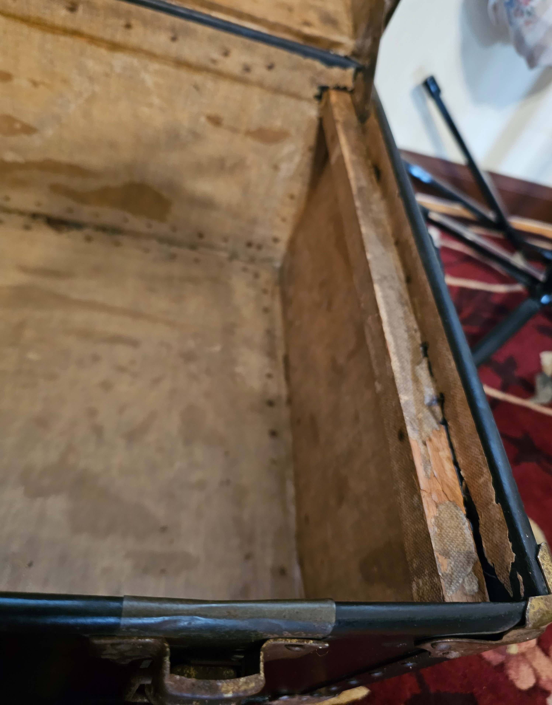
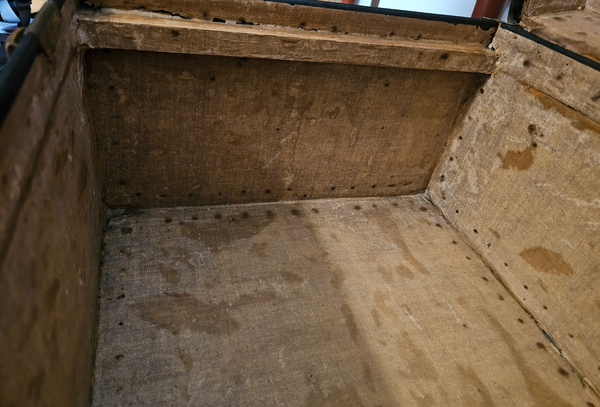
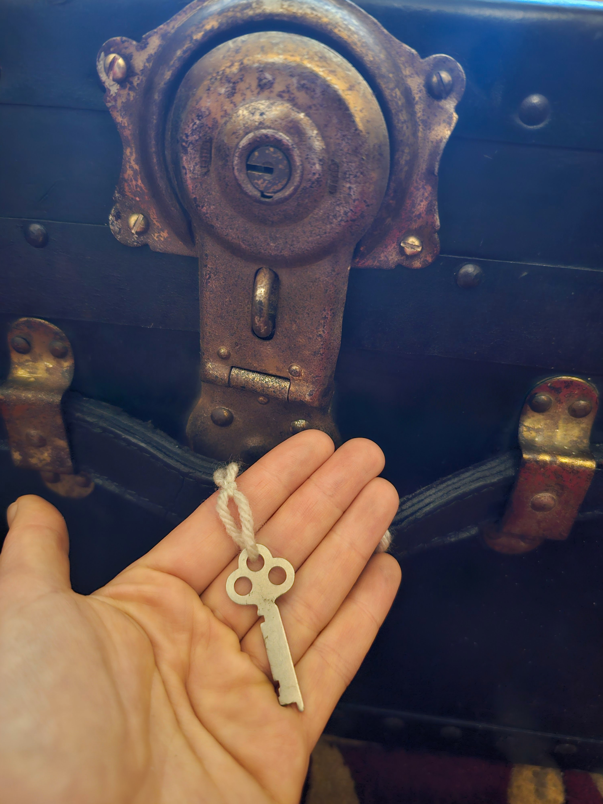
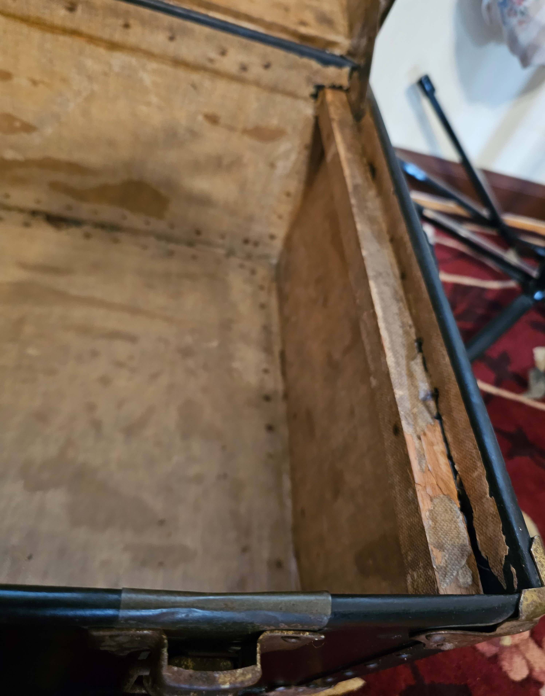
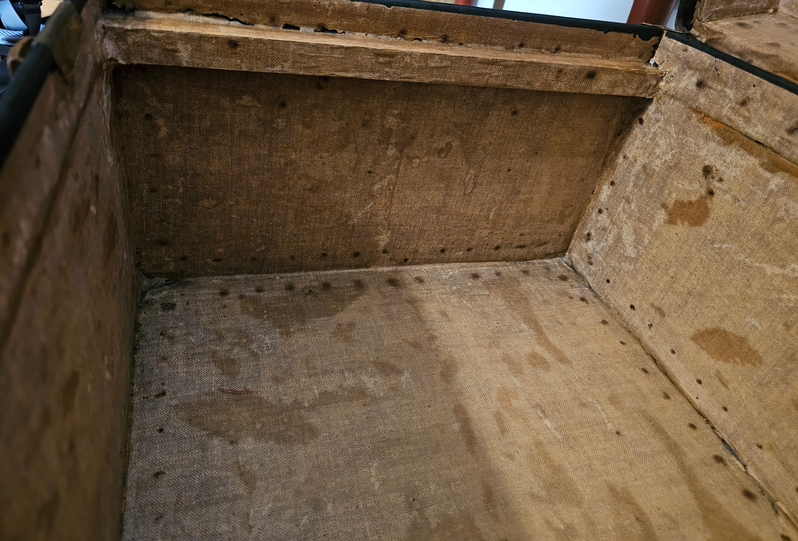
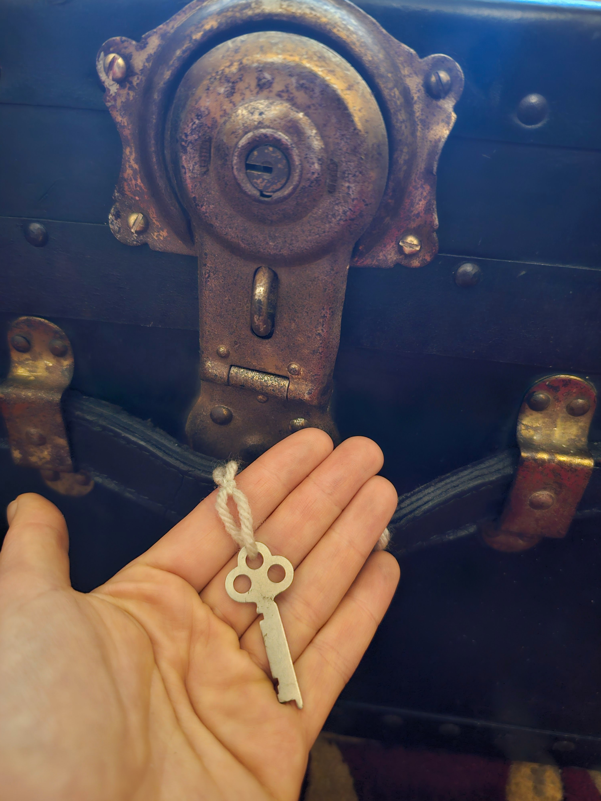
Before and After
.png)
.png)
.png)
.png)
.png)
.png)